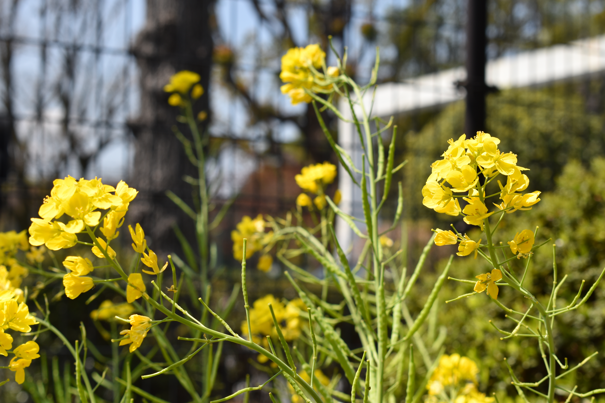
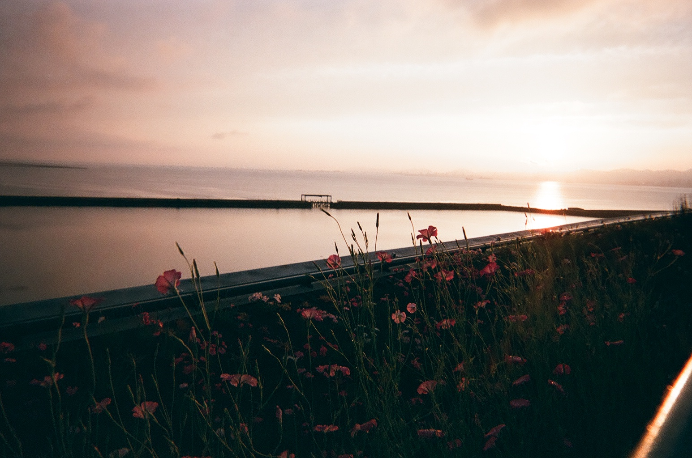

OMOTE / DIGITAL CAMERA
好き！が
あふれる、表のわたし。
可愛い景色に、ときめいたり。
きれいな光に、感傷に浸ったり。
あなたの「好き」から、今日の自分に出会う。

4つの景色 × 6つの問い。
時間を気にせず、あなたのペースで。
URA / FILM CAMERA
きれいなのに、
ちょっと寂しい。裏のわたし。
誰かには、言えない気持ち。
何でもない景色に、重ねてしまう気持ち。
ここでは、そんな自分のままで。

4つの景色 × 6つの問い。
表の結果と、見比べることもできます。
A VIEW OF YOU
好きな景色を、ひとつ。
4つの景色を、6つの問いで。
あなたの直感が、
今日の「見方」を教えてくれる。
01/ 06
時間を気にせず、あなたのペースで。
今、選ぶならどの景色？QUESTION 01 / 06
写真をタップして選ぶ1 / 2 / 3 / 4 キーでも選べます
YOUR LITTLE COLLECTION
6回の「すき」から見えてきた、今日のあなた。
タップすると、もうひとつの言葉。
01 TODAY'S TYPE
AND YOUR WORDS?
あなたには、どう見えた？
MEET YOUR OTHER SIDE
表と裏の、見え方。
写真の選択から生まれる、展示のための見え方診断です。性格の言葉は写真から想像した、この展示だけの解釈です。表と裏は作品上の呼び名。同じ4枚を問いを変えて選ぶため、繰り返した好みも結果に反映されます。同点なら最後に選んだ景色を優先します。
あなたが選んだ景色
この結果は、今日のあなたの小さな肖像。
また選んだら、違う自分に出会うかもしれません。
WORDS IN THE AIR
景色のそばに、
あなたのことば。
この端末で残した言葉が、ここに集まります。